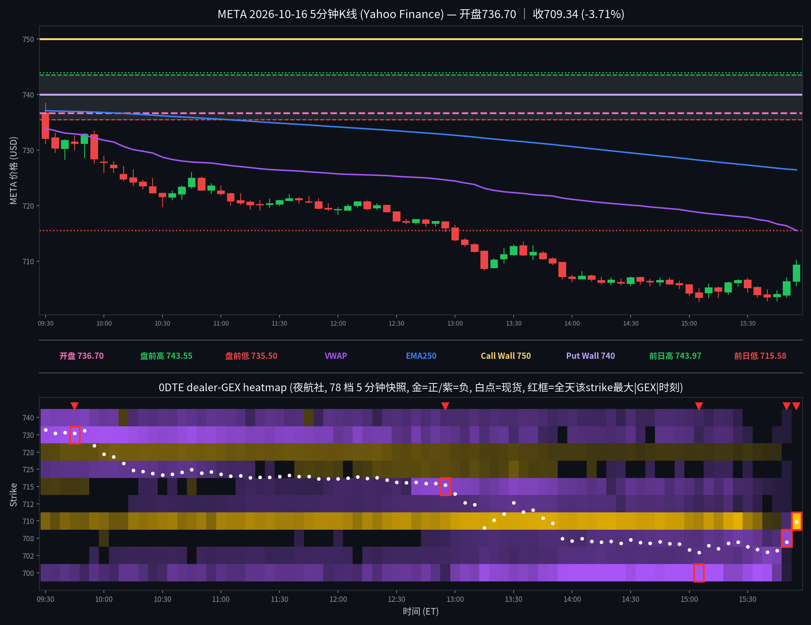

META 日内报告
2026年10月16日 · 周五 · 日内报告
早盘分析
2026-10-16 07:18 MDT｜Alpha夜航社 #junkman-analysis｜作者 junk_man（APP徽章）
盘前参考价737.125，🟡正负混合、方向选择。Call Wall 750（下方）、Magnet 737.5（区域内）、Put Wall 740（下方；⚠️在参考价上方，不作下方支撑）、Flip 737.8（区域内）；交易区间735–740，上墙延伸750–755。IV 38.3%(1DTE)，1σ ±9.58(±1.30%)，波动区间727.54–746.71。低点观察区732.5–735：失守732.5取消本轮接底。开盘分支：735下方先看732.5；737.5上方先看737.8。五个机会：①📈回踩Call：收复737.5→737.8→740；②🚀突破Call：站稳750→752.5→755，755再站稳→760→765；③📉受阻Put：737.5受阻再失守735→732.5→730；④🔻破位Put：跌破735→732.5→730；⑤🛟抄底Call：732.5–735收复735→737.5→740。 「低点观察区732.5–735：失守732.5取消本轮接底」
盘前预测 · 情况未发生
5 分钟 K 线 × 0DTE heatmap
0DTE（2026-10-16到期），夜航社 78 档 5 分钟快照；白点为每档现货位置

heatmap解读（0DTE，0DTE（2026-10-16到期），夜航社 78 档 5 分钟快照）
GEX 地形图（0DTE（2026-10-16到期），夜航社 78 档 5 分钟快照）：金色=正 gamma 区（做市商对冲减速带/墙），紫色=负 gamma 区（加速带）。白点为每档现货位置。
- 金色带（收盘档）：710(+3347.9M，巨墙)
- 紫色带（收盘档）：700(-0.2M，已翻弱)、707.5(-159.0M)、715(-0.0M，已翻弱)
- 全天最大节点：710(+3347.9M@15:55)、700(-473.4M@15:05)、730(-235.4M@09:45)、707.5(-159.0M@15:50)、715(-151.2M@12:55)
- 尾盘节点变化：710 +33.0M→+3347.9M（101倍，持续增厚）；700 -473.4M(15:05)→-0.2M(翻弱)；730 -235.4M→归零
全天最大节点 TOP5
一、710（正 gamma 巨墙/地板）：全天变化——从 +33.0M 到 +3347.9M（约101倍）；影响时段——15:55 ET 达到峰值，当时现货约 709.85（strike在现货上方）；影响方式——价格全天下跌逼近 710 时该墙持续增厚，尾盘价格在其附近获得强支撑/减速并小幅反弹至 709.34 收盘。
二、700（负 gamma 加速带/活板门）：全天变化——从 -29.9M 到 -473.4M（约16倍）；影响时段——15:05 ET 达到峰值，当时现货约 703.41（strike在现货下方）；影响方式——午后价格跌破 707 后在该带上方加速下探至 702.71 全天低点，随后 700 翻弱、价格反弹。
三、730（负 gamma 天花板）：全天变化——从 -194.1M 到 -235.4M（约1.2倍）；影响时段——09:45 ET 达到峰值，当时现货约 730.95（strike在现货下方）；影响方式——开盘价格即在其下方运行，早盘反弹至 731–732 一带被该带压制，随后一路走低。
四、707.5（负 gamma 加速带）：全天变化——从首有值 +0.5M@10:00 翻转为 -159.0M（约344倍）；影响时段——15:50 ET 达到峰值，当时现货约 706.42（strike在现货上方）；影响方式——尾盘价格跌破 707.5 后在该加速带中快速下探，是尾盘杀跌的燃料之一。
五、715（负 gamma 加速带）：全天变化——从 +2.4M 翻转为 -151.2M（约64倍）；影响时段——12:55 ET 达到峰值，当时现货约 716.00（strike在现货下方）；影响方式——中午价格跌破 716 后在该带下方加速，随后 715 翻弱、价格在 713–714 短暂企稳后再破。
亮度口径：p99 截断做上限；红框 = 全天该 strike 最大 |GEX| 时刻。
资金流（0DTE，全天6笔；premium≥$20万｜size≥50｜DTE≤1｜side=B/M/A）
| 时间 | Strike | C/P | DTE | Fill | Bid/Ask | Side | Size | Prem | Vol | OI |
|---|---|---|---|---|---|---|---|---|---|---|
| 10:14:51 | 700.0 | CALL | 0 | $26.00 | 26.00 / 27.30 | BID | 100 | $0.260M | 191 | 15213 |
| 12:40:24 | 715.0 | PUT | 0 | $1.49 | 1.42 / 1.49 | ASK | 4325 | $0.645M | 23561 | 4051 |
| 13:20:29 | 730.0 | PUT | 0 | $20.60 | 20.15 / 20.60 | ASK | 300 | $0.618M | 8364 | 11785 |
| 13:24:44 | 700.0 | CALL | 0 | $10.50 | 10.20 / 10.50 | ASK | 200 | $0.210M | 1765 | 15213 |
| 15:40:54 | 720.0 | PUT | 0 | $15.50 | 15.15 / 15.50 | ASK | 250 | $0.388M | 28101 | 6346 |
| 15:49:36 | 700.0 | CALL | 0 | $4.50 | 3.90 / 4.50 | ASK | 999 | $0.450M | 7138 | 15213 |
全天6笔：主动买入(call ask + put bid)$0.66M，主动卖出(put ask + call bid)$1.91M，mid $0.00M（不计入主动买卖）；主动资金偏空。
分析总结
价格行为 × 0DTE GEX 结构复盘
① 开盘 736.70，全天 738.49–702.71，收 709.34（-3.71%）。
② 白点轨迹：开 736.70 → 高 738.49 → 低 702.71 → 收 709.34；全天单边下跌，尾盘在710巨墙处企稳小幅反弹。
③ 墙位：Junk-man简报 Call Wall 750 / Put Wall 740（⚠️在参考价上方，不作下方支撑；Magnet 737.5 / Flip 737.8）；heatmap算法墙首→末：call墙 737.5→710（下移）、put墙 710→（下方无正节点）。
④ 资金流：全天6笔：主动买入(call ask + put bid)$0.66M，主动卖出(put ask + call bid)$1.91M，mid $0.00M（不计入主动买卖）；主动资金偏空。
⑤ 收盘在 VWAP 下方（VWAP 715.53，EMA250 726.45）。
K线=Yahoo Finance 5分钟；heatmap=夜航社 dealer-GEX 5分钟快照；heatmap亮度=平方根连续渐变（p99裁剪）。
收盘后的静态快照；页面不在打开时更新行情。